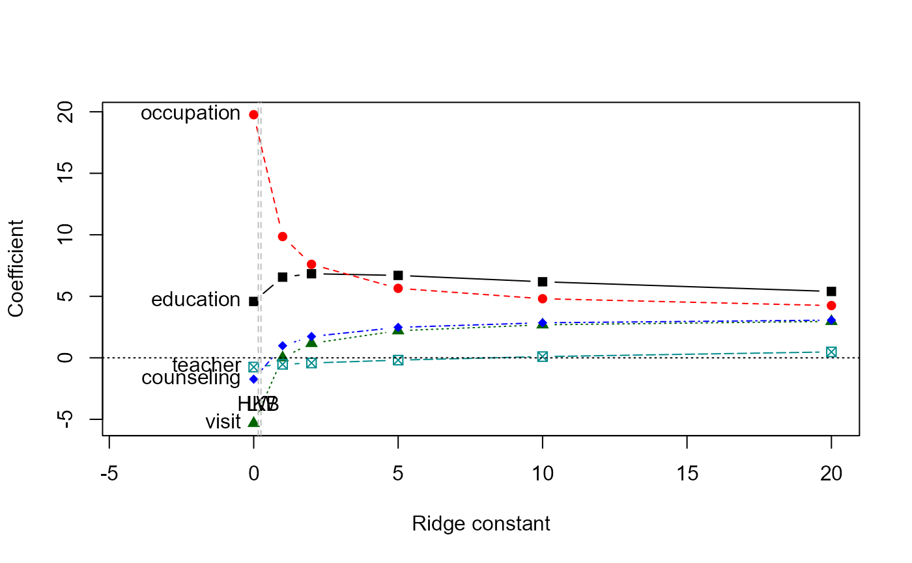

Experimental. Multivariate ridge regression (class "mlmridge") is new in this
version; its functions, arguments and results may change in future releases.
ridge() with a matrix response (e.g., ridge(cbind(Y1, Y2) ~ x1 + x2, data)) returns an
object of class "mlmridge", fitting all responses with a common set of ridge constants.
as.ridge() extracts the results for one response as an ordinary "ridge" object, so that
all the methods for "ridge" objects (traceplot(), plot.ridge(), pairs.ridge(),
plot3d.ridge(), precision(), vif.ridge(), pca(), ...) can be applied to it.
The result is the same as fitting ridge() to that response alone, with the same
lambda or df.
Usage
as.ridge(x, ...)
# S3 method for class 'ridge'
as.ridge(x, ...)
# S3 method for class 'mlmridge'
as.ridge(x, response = 1, ...)Value
An object of class "ridge"; see ridge() for its components.
Examples
if (requireNamespace("heplots", quietly = TRUE)) {
data(schooldata, package = "heplots")
sridge <- ridge(cbind(reading, mathematics, selfesteem) ~
education + occupation + visit + counseling + teacher,
data = schooldata, lambda = c(0, 1, 2, 5, 10, 20))
# results for one response
read.ridge <- as.ridge(sridge, "reading")
read.ridge
traceplot(read.ridge)
}
